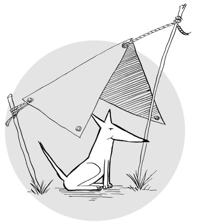

Tarpo
Copyright © 2008
Patrick Donelan
http://patspam.com/
Tarpo and associated source code is licensed under the GNU General Public License version 3 (
GPL v3
).
Tarpo is based on the
ExtJS
Simple Tasks v2
sample code (
GPL v3
).
OK